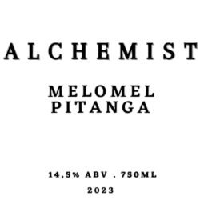

-
Melato de Bracatinga

Produzido com mel exótico de sabor marcate, é uma exclusividade brasileira. Seu aroma e sabor é levemente amargo, terroso, mineral, menos calórico de paladar acentuado, seco e frutado.
R$ 125,00
-
Melomel Pitanga
Produzido com a suavidade do mel de laranjeira e a pegada cítrica da pitanga, combinado a uma lenta fermentação e meses de maturação, resulta em uma bebida incomparável. Possui sabor intenso, dulçor equilibrado e o toque cítrico da pitanga.
R$ 75,00
-
Oaked Meads
A receita-base consiste em méis da florada da bracatinga, lenta fermentação ( levedura com alta produção de ésteres, produzindo ésteres florais e frescos,) com maturação em carvalho Europeu.
R$ 55,00